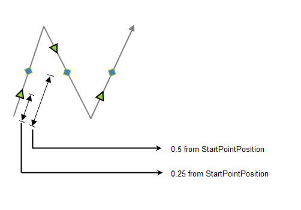
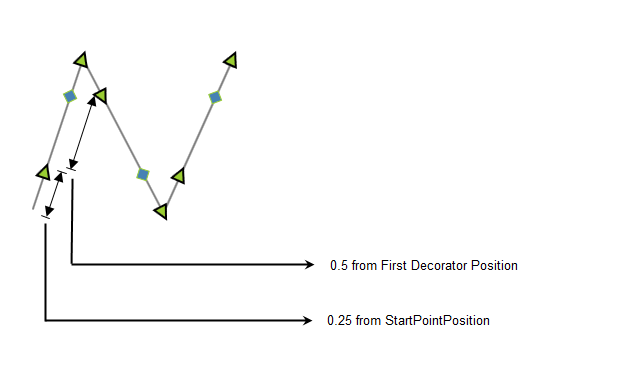
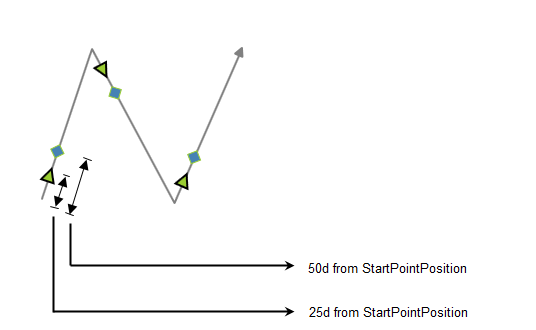
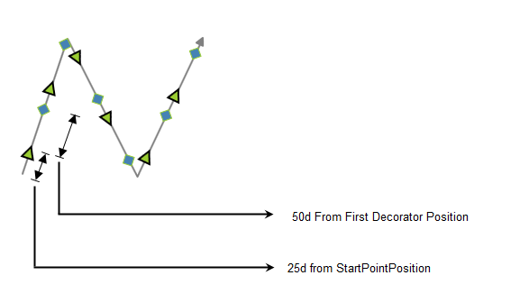

DecoratorStyle
The decorator shapes used for the connector can be customized by specifying the property values under the CustomDecoratorStyle property. Same Style and shapes can be given to an entire line segment or different shapes and styles can be given to each part of the line segment, The various properties under the CustomDecoratorStyle property are as follows:
· Fill - Specifies the color to be used to fill the decorator
· StrokeThickness - Specifies the thickness value for the decorator's border
· Stroke - Specifies the color to be used for the border of the decorator
· StrokeStartLineCap - Specifies the shape used at the start of a line or segment
· StrokeEndLineCap - Specifies the shape at the end of a line or segment
· StrokeLineJoin - Specifies the shape that joins two lines or segments
· StrokeDashArray - Specifies a collection of double values that indicate the pattern of dashes and gaps used to outline shapes.
· Width- Specifies the Width of the shape
· Height- Specifies the Height of the shape
To set the same Style and Shape for the entire Line segment
|
[XAML] <syncfusion:SegmentDecoratorSettings.CustomDecoratorStyle> <Style TargetType="Path"> <Setter Property="Stretch" Value="Fill"/> <Setter Property="Fill" Value="Red"/> <Setter Property="Width" Value="15"/> <Setter Property="Height" Value="15"/> <Setter Property="Stroke" Value="Black"/> <Setter Property="StrokeThickness" Value="2"/> </Style> </syncfusion:SegmentDecoratorSettings.CustomDecoratorStyle> |
|
[C#] Style decoratorstyle = new System.Windows.Style(); decoratorstyle.BasedOn = decoratorsettings.CustomDecoratorStyle; decoratorstyle.TargetType = typeof(Path); decoratorstyle.Setters.Add(new Setter(Path.StrokeProperty, new SolidColorBrush(Colors.LightSteelBlue))); decoratorstyle.Setters.Add(new Setter(Path.StrokeThicknessProperty, 2d)); decoratorstyle.Setters.Add(new Setter(Path.WidthProperty, 15d)); decoratorstyle.Setters.Add(new Setter(Path.HeightProperty, 15d)); decoratorstyle.Setters.Add(new Setter(Path.FillProperty, new SolidColorBrush(Colors.YellowGreen))); decoratorsettings.CustomDecoratorStyle = decoratorstyle; line.SegmentDecoratorSettings = decoratorsettings;
|
To set different shapes and styles to the line segment
|
[XAML] <syncfusion:SegmentDecoratorSettings.SegmentDecorator> <syncfusion:CollectionExt> <syncfusion:SegmentDecorator DecoratorOffset="0.2" DecoratorShape="Arrow" CustomDecoratorStyle="{StaticResource de}" /> <syncfusion:SegmentDecorator DecoratorOffset="0.5" DecoratorShape="Diamond"/> </syncfusion:CollectionExt> </syncfusion:SegmentDecoratorSettings.SegmentDecorator>
|
|
[C#] Style decoratorstyle = new System.Windows.Style(); decoratorstyle.BasedOn = decoratorsettings.CustomDecoratorStyle; decoratorstyle.TargetType = typeof(Path); decoratorstyle.Setters.Add(new Setter(Path.StrokeProperty, new SolidColorBrush(Colors.LightSteelBlue))); decoratorstyle.Setters.Add(new Setter(Path.StrokeThicknessProperty, 2d)); decoratorstyle.Setters.Add(new Setter(Path.WidthProperty, 15d)); decoratorstyle.Setters.Add(new Setter(Path.HeightProperty, 15d)); decoratorstyle.Setters.Add(new Setter(Path.FillProperty, new SolidColorBrush(Colors.YellowGreen))); decoratorsettings.CustomDecoratorStyle = decoratorstyle; line.SegmentDecoratorSettings = decoratorsettings;
|
Appearance

Figure 74: AbsoluteFraction
|
[XAML] <syncfusion:LineConnector.SegmentDecoratorSettings> <syncfusion:SegmentDecoratorSettings Unit="AbsoluteFraction"> <syncfusion:SegmentDecoratorSettings.SegmentDecorator> <syncfusion:CollectionExt> <syncfusion:SegmentDecorator DecoratorOffset="0.25" DecoratorShape="Arrow" /> <syncfusion:SegmentDecorator DecoratorOffset="0.5" DecoratorShape="Diamond"/> </syncfusion:CollectionExt> </syncfusion:SegmentDecoratorSettings.SegmentDecorator> </syncfusion:SegmentDecoratorSettings> </syncfusion:LineConnector.SegmentDecoratorSettings>
|

Figure 75: RelativeFraction
|
[XAML] <syncfusion:LineConnector.SegmentDecoratorSettings> <syncfusion:SegmentDecoratorSettings Unit="RelativeFraction"> <syncfusion:SegmentDecoratorSettings.SegmentDecorator> <syncfusion:CollectionExt> <syncfusion:SegmentDecorator DecoratorOffset="0.25" DecoratorShape="Arrow" /> <syncfusion:SegmentDecorator DecoratorOffset="0.5" DecoratorShape="Diamond"/> </syncfusion:CollectionExt> </syncfusion:SegmentDecoratorSettings.SegmentDecorator> </syncfusion:SegmentDecoratorSettings> </syncfusion:LineConnector.SegmentDecoratorSettings>
|

Figure 76: AbsoluteValue
|
[XAML] <syncfusion:LineConnector.SegmentDecoratorSettings> <syncfusion:SegmentDecoratorSettings Unit="AbsoluteValue"> <syncfusion:SegmentDecoratorSettings.SegmentDecorator> <syncfusion:CollectionExt> <syncfusion:SegmentDecorator DecoratorOffset="25" DecoratorShape="Arrow" /> <syncfusion:SegmentDecorator DecoratorOffset="50" DecoratorShape="Diamond"/> </syncfusion:CollectionExt> </syncfusion:SegmentDecoratorSettings.SegmentDecorator> </syncfusion:SegmentDecoratorSettings> </syncfusion:LineConnector.SegmentDecoratorSettings>
|

Figure 77: RelativeValue
|
[XAML] <syncfusion:LineConnector.SegmentDecoratorSettings> <syncfusion:SegmentDecoratorSettings Unit="RelativeValue"> <syncfusion:SegmentDecoratorSettings.SegmentDecorator> <syncfusion:CollectionExt> <syncfusion:SegmentDecorator DecoratorOffset="25" DecoratorShape="Arrow" /> <syncfusion:SegmentDecorator DecoratorOffset="50" DecoratorShape="Diamond"/> </syncfusion:CollectionExt> </syncfusion:SegmentDecoratorSettings.SegmentDecorator> </syncfusion:SegmentDecoratorSettings> </syncfusion:LineConnector.SegmentDecoratorSettings>
|